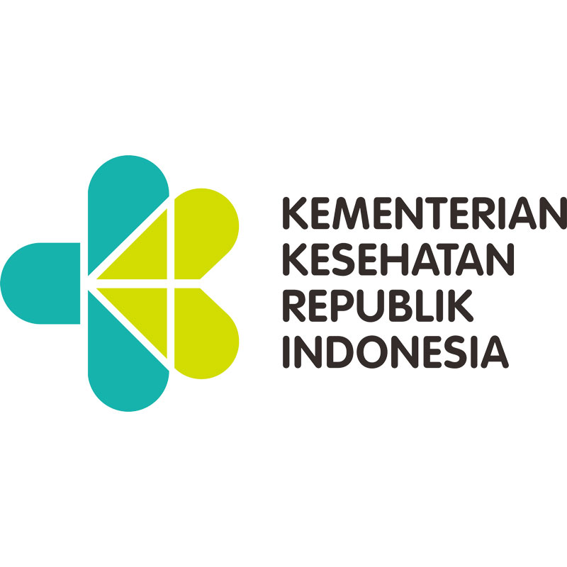
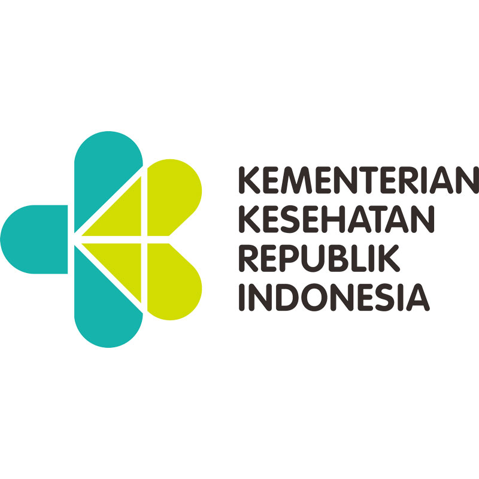

Healthcare
Kesehatan
Menjamin Kehidupan yang Sehat dan Mempromosikan Kesejahteraan untuk Semua Orang di Segala Usia
Education
Kualitas Pendidikan
Memastikan pendidikan berkualitas yang inklusif dan adil serta mempromosikan kesempatan belajar sepanjang hayat untuk semua
Social Care
Pembangunan Sosial
Pemenuhan Hak Dasar Manusia yang Berkualitas Secara Adil dan Setara untuk Meningkatkan Kesejahteraan Bagi Seluruh Masyarakat.
Prinsip Pelaksaan SDGs
Dalam pelaksanaannya, Indonesia memegang teguh prinsip-prinsip SDGs, yaitu
prinsip pembangunan universal, integrasi, dan tidak ada yang tertinggal.
Universal
Dilaksanakan oleh dunia dengan tujuan dan sasaran yang transformatif pada manusia, komprehensif, dan berjangka panjang

Integration
Dilaksanakan secara terintegreasi pada semua dimensi sosial, ekonomi dan lingkungan (saling terkait)

No One Left Behind
Dilaksanakan dengan melibatkan semua pemangku kepentingan serta memberi manfaat bagi semua terutama yang rentan
4 Platform Partisipasi SDGs yang terlibat
Salah satu kekuatan Indonesia dalam pelaksanaan TPB/SDGs adalah keterlibatan semua pihak mulai dari perencanaan, pelaksanaan, pemantauan dan evaluasi serta pelaporannya. Para pemangku kepentingan (stakeholder) utama yang berpartisipasi aktif dalam pelaksanaan dan pencapaian TPB/SDGs di Indonesia terdiri dari empat platform, yakni: Pemerintah dan Parlemen, Akademisi dan Pakar, Organisasi Kemasyarakatan dan Media, Filantropi dan Pelaku Usaha.
Pemerintah dan Perlemen
Di mana Pemerintah dan Parlemen memiliki tugas untuk memastikan bahwa SDGs dengan tujuan-tujuan dari aspek-aspek pembangunan yang berkelanjutan itu bisa dipenuhi.
Akademisi dan Pakar
Akademisi dan Pakar juga memiliki peran penting terhadap riset maupun kebijakan untuk peningkatan kapasitas dalam negeri serta pemantauan dan juga evaluasi.
Ormas dan Media
Ormas dan Media pun memiliki peran konsisten untuk memberitakan dan menyebarkan semangat pencapaian pembangunan berkelanjutan.
Filantropi dan Pelaku Usaha
Filantropi dan Pelaku Bisnis memilik tugas untuk membentuk wadah bagi para pengusaha untuk mengoptimalkan karya-karya sosial secara lebih tepat sasaran.

Pondasi SDGs di Indonesia
4 Pilar SDGs

Pilar Pembangunan Sosial
Pembangunan Sosial SDGs adalah tercapainya pemenuhan hak dasar manusia yang berkualitas secara adil dan setara untuk meningkatkan kesejahteraan bagi seluruh masyarakat
Pilar Pembangunan Ekonomi
Pembangunan Ekonomi SDGs adalah tercapainya pertumbuhan ekonomi berkualitas melalui keberlanjutan peluang kerja dan usaha, inovasi, industri inklusif, infrastruktur memadai, energi bersih yang terjangkau dan didukung kemitraan
Pilar Pembangunan Lingkungan
Pembangunan Pembangunan Lingkungan SDGs adalah tercapainya pengelolaan sumberdaya alam dan lingkungan yang berkelanjutan sebagai penyangga seluruh kehidupan
Pilar Pembangunan Hukum & Tata Kelola
Pembangunan Hukum dan Tata Kelola SDGs adalah terwujudnya kepastian hukum dan tata kelola yang efektif, transparan, akuntabel dan partisipatif untuk menciptakan stabilitas keamanan dan mencapai negara berdasarkan hukum​


The 17 Goals
Beberapa pencapaian dari UN (United Nations) dalam mencapai 17 tujuan SDGs
Target
Acara
Publikasi
Aksi
Persenan data Target perkembangan
Berikut adalah data target perkembangan per-target, yaitu Healthcare, Education, dan Social Care dari total semua 17 target SDGs.
Berita Mengenai SDGs
- All
- Healthcare
- Education
- Social Care
{kind=link}
Healthcare
Berita Heatlthcare 1

Education
Berita Education 3

Healthcare
Berita Healthcare 2
{kind=link}
Social Care
Berita Social Care 2
{kind=link}
Education
Berita Education 2
{kind=link}
Healthcare
Berita Healthcare 3

Social Care
Berita Social Care 1

Social Care
Berita Social Care 3

Education
Berita Education 1
Sumber

 

Apa Kata Mereka

Ma'ruf Amin
Wakil Presiden Republik Indonesia
 SDGs merupakan komitmen global yang sangat penting untuk menjadi panduan, kerangka, dan agenda bersama yang inklusif dan berkelanjutan, demi menyelamatkan generasi hari ini maupun generasi masa depan.
SDGs merupakan komitmen global yang sangat penting untuk menjadi panduan, kerangka, dan agenda bersama yang inklusif dan berkelanjutan, demi menyelamatkan generasi hari ini maupun generasi masa depan.

Suharso Monoarfa
Mantan Menteri Perumahan Rakyat Indonesia
Pandemi Covid tidak hanya membalikkan kemajuan menuju SDGs, tetapi juga mengurangi sumber daya yang tersedia untuk mengembangkan pembiayaan.

Abdul Halim Iskandar
Politikus
Nanti pada saat sudah sampai di desa, mulai dari mendalami pendataan berbasis SDGs Desa, disitu akan kelihatan masalahnya, Kita sudah sampaikan kepada pendamping desa di seluruh Indonesia untuk memberikan ruang yang cukup bagi siapapun yang memiliki komitmen untuk membangun desa termasuk mahasiswa KKN untuk didampingi.
Tim
Anggota Tim Techome Invention 2022

Doan Carlos Embara
Anggota
George Miracle Theophylus
AnggotaKontak Kami
Ada Pertanyaan Mengenai SDGs?